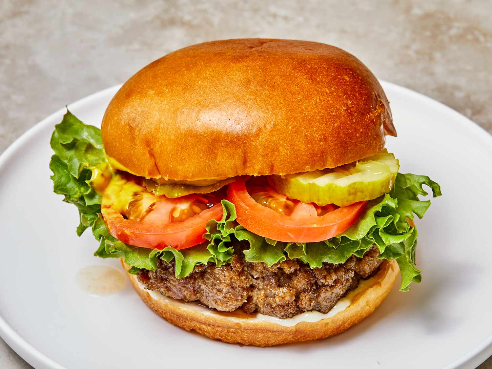

Best Hamburger Ever

Description
The best burger recipe for summertime grilling!
This juicy burger is jam-packed with all kinds of stuff and has no tasteless bread crumbs. Serve on buns with your favorite condiments.
Ingredients
1 1/2 pounds lean ground beef
1/2 onion, finely chopped
1/2 cup shredded Colby Jack or Cheddar cheese
1 egg
1 (1 ounce) envelope dry onion soup mix
1 clove garlic, minced
1 tablespoon garlic powder
1 teaspoon soy sauce
1 teaspoon Worcestershire sauce
1 teaspoon dried parsley
1 teaspoon dried basil
1 teaspoon dried oregano
1/2 teaspoon crushed dried rosemary
salt and pepper to taste
Steps
Preheat an outdoor grill for high heat and lightly oil the grate.
Meanwhile, combine ground beef, onion, cheese, egg, onion soup mix, minced garlic, garlic powder, soy sauce, Worcestershire sauce, parsley, basil, oregano, rosemary, salt, and pepper in a large bowl. Use your hands to form the mixture into 4 patties.
Cook patties on the preheated grill until no longer pink in the center and the juices run clear, about 4 to 5 minutes per side. An instant-read thermometer inserted into the center should read at least 165 degrees F (74 degrees C).